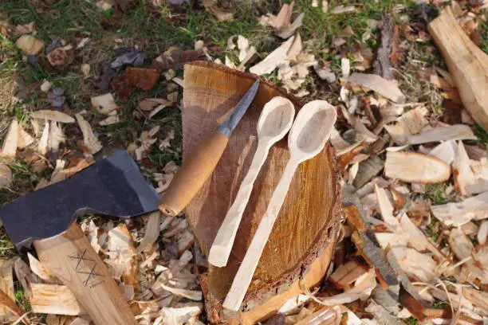
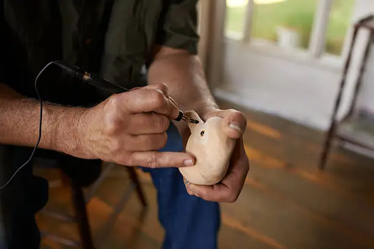

Shop Handmade Wooden Goods
Discover the beauty and utility of handcrafted wooden items, made with passion and precision.
Shelving & Storage Solutions
Enhance your space with functional shelving and storage. Durable, sustainably sourced hardwoods like oak and maple ensure lasting beauty. Custom options fit any décor.
Handcrafted Home Décor
Elevate your home with unique wooden décor: carved figurines, candle holders, bowls. Made from walnut, birch, cedar with natural finishes. Each piece is one-of-a-kind, supporting artisans and sustainable practices.
Personalized Items & Gifts
Special occasions call for personalized wooden gifts: engraved signs, coasters, cutting boards, boxes. High-precision engraving and carving ensure lasting keepsakes. Custom requests welcome.
Our handmade goods reflect artisan skill and dedication. We use ethically sourced natural materials, ensuring quality and environmental responsibility. Our diverse wood types offer unique character. We aim to provide durable, functional products cherished for generations. Experience the difference of genuine craftsmanship.
DIY Woodworking Kits & Carving Supplies
Unleash your inner artisan with our DIY woodworking kits and high-quality carving supplies.
Beginner's Spoon Carving Kit
Start your whittling journey with this kit: basswood blank, knives, sandpaper, and oil. Learn basic carving with a detailed guide. Build confidence and create a functional, beautiful spoon. Tools are durable and sharpenable for future projects.
Small Animal Whittling Project
Carve a charming animal (owl, fox, or bird) with this kit. Includes pre-cut basswood blank, detail knife, and V-gouge. Learn shaping, features, and texture with comprehensive instructions. Develop precision and artistic expression.
Wooden Coaster Making Kit

Craft four beautiful wooden coasters. Kit includes hardwood blanks, sandpaper, wood burning tool, and sealant. Learn sanding and personalization for durable, artful coasters. Skills gained are fundamental to many woodworking projects.
Carving Supplies & Tools
Equip your workshop with the finest carving tools and supplies.
Premium Carving Knives & Gouges
Precision and durability from high-carbon steel. Versatile knives, specialized hook knives, and fine gouges. Ergonomic handles from sustainable hardwoods. Resources for tool maintenance available. Quality tools enhance results.
Premium Wood Blanks & Blocks
Quality wood is key. Wide selection of kiln-dried basswood, walnut, maple, cedar. Sourced from sustainable forests. Find the perfect canvas for your next masterpiece. Exotic woods also available.
Finishing & Maintenance Supplies
Complete projects with high-quality finishes. Natural oils and waxes protect and enhance wood. Sandpaper for smooth finishes. Sharpening tools keep instruments razor-sharp. Invest in quality for lasting beauty.
We empower individuals in woodworking. Beginner-friendly DIY kits and extensive carving supplies. Prioritizing durability, performance, and ethical sourcing. Comprehensive resources on tool maintenance and finishing. woodHandcraft fosters a community that loves craftsmanship and natural materials. Discover endless possibilities.
Workshops & Classes
Immerse yourself in woodworking with our hands-on workshops and classes.
Hands-on Local Classes
Join our local classes in our equipped workshop. All skill levels welcome. Small classes ensure personalized attention. Learn safety, carving, joinery, finishing. All materials and tools provided. Foster community and celebrate creations.
Private Lessons & Virtual Options
Personalized learning with private lessons or virtual workshops. One-on-one instruction tailored to your goals. Live video conferencing for remote learners. High-quality instruction and feedback, accessible globally. Flexible scheduling available.
Our workshops ignite your passion for woodworking. Supportive environment to learn techniques and create meaningful pieces. Expert instructors provide hands-on learning and personalized feedback. We cover safety, tool selection, and advanced techniques. Join the woodHandcraft community to transform raw wood into functional art.
Custom Wood Projects
Dreaming of a unique wooden piece tailored just for you? woodHandcraft brings your custom visions to life.
Your Vision, Our Craftsmanship
We specialize in bespoke wooden furniture and décor. Our artisans transform your ideas into tangible realities. Detailed consultation covers design, function, wood, and budget. We advise on properties, finishes, and construction for beautiful, durable results. Meticulous attention and open communication ensure your vision is realized. Custom capabilities include tables, seating, cabinetry, and wall art. We work with diverse hardwoods and softwoods. Advanced rendering provides mock-ups. Simple, transparent quote process. We arrange careful delivery and installation. We build relationships founded on trust, quality, and passion for wood.
Our custom service is built on collaboration and meticulous craftsmanship. We deliver exceptional value, transforming abstract ideas into beautiful realities. Our artisans handle projects of varying complexity and scale. We offer various finishing options and prioritize ethically sourced, local woods. Choose woodHandcraft for a bespoke experience, where your vision comes to life with unparalleled skill and respect for the material.
Our Sustainability Commitment
Our passion for wood goes hand-in-hand with preserving our planet. Responsible craftsmanship from forest to product.
Ethically Sourced Woods
We ethically source wood from responsibly managed forests. Prioritizing FSC/PEFC certified timber to minimize deforestation and promote healthy ecosystems. Choosing woodHandcraft supports environmental stewardship. We continuously vet suppliers for alignment with our high standards.
Local Materials Focus & Waste Reduction
We emphasize local materials to reduce emissions and support regional economies. Using fallen, salvaged, and urban wood. Our workshop minimizes waste through precise cutting, repurposing scraps, and composting sawdust. Natural, non-toxic finishes and recycled packaging ensure respect for the environment.
Sustainability is integral to woodHandcraft. We minimize our environmental footprint from forest to delivery. Ethical sourcing ensures wood from healthy, biodiverse forests. Our local materials focus reduces emissions. We actively reduce waste and use natural finishes. Choosing woodHandcraft supports environmental stewardship and ethical production. We continuously improve our efforts.
Why woodHandcraft is Different
In a world of mass production, woodHandcraft stands apart. Discover what makes us unique.
Down-to-Earth, No-Fluff Craftsmanship
We believe in honest work and tangible results. Practical approach to design, construction, and natural materials. Real products for real use. Our craftsmanship speaks for itself in clean lines and lasting quality. Authenticity and reliability define us.
Real Products for Real Use & DIY Empowerment
Functional wooden products for everyday use. DIY kits empower beginners with comprehensive guides, making complex projects accessible. We demystify woodworking, fostering a community where skill and utility go hand-in-hand.
Transparent Materials & Honest Brand Voice
Transparency in material sourcing, providing detailed information. Our brand voice is straightforward, authentic, workshop-inspired. Imagery showcases real work. This builds trust, fostering a community valuing integrity and quality.
woodHandcraft stands out through authenticity, utility, and empowerment. We foster a community and philosophy, prioritizing tangible quality and practical skills. Ethical sourcing and transparent information. Our honest brand voice reflects genuine passion. We offer experiences that enrich your life, connecting you to woodworking's timeless art.
Customer Gallery & Testimonials
Hear from our satisfied customers and see incredible creations from our community.
"Kit was perfect! Clear instructions, beautiful wood. Proud of my spoon, ordered another. Exceptional tools, rewarding creation. Appreciate natural, sustainable materials. Transformative experience, highly recommend!"
- Sarah J., Aspiring Carver
"Custom cutting board stunning. Impeccable craftsmanship, special personalized gift. Team helpful, details perfect. Gorgeous, high-quality, ethically sourced wood. More than a board, it's art. Rare talent with ethics. Returning customer. Thank you!"
- Mark T., Satisfied Customer
"Whittling workshop exceeded expectations! Knowledgeable, patient instructor. Small class, one-on-one attention. Inspiring environment, met enthusiasts. Loved learning wood types, tool handling. Planning another class. Fantastic community, grateful. A true gem!"
- Emily R., Workshop Participant
"High-quality, sustainably sourced wood blanks unparalleled. Basswood blocks joy to carve. Ethical sourcing and waste reduction commendable, aligns with my values. Refreshing supplier with excellent materials and integrity. My go-to source, highly recommend!"
- David L., Professional Artisan
We are proud of the woodHandcraft community and your beautiful creations. Your passion inspires us. Share your photos and stories; your testimonials inspire others. Your satisfaction is our priority, and reviews confirm our dedication. Thank you for being part of the woodHandcraft family. We continuously improve based on your feedback.
Disclaimer
Welcome to woodHandcraft. By using our website, purchasing products, or participating in workshops, you agree to these terms. This disclaimer governs your use of woodHandcraft's website, services, products, and content. Read carefully; if you disagree, do not use our site or services.
Accuracy of Information: We strive for accuracy, but don't warrant completeness or reliability. Content is for general information only, not professional advice. Product images may vary. We reserve the right to correct errors or update information without notice.
Product Variations: Handcrafted from natural wood, slight variations are inherent. These are not defects. DIY kit contents may vary slightly, but quality remains equivalent.
Safety and Use of Tools: Woodworking involves sharp tools and hazards. Use caution, follow safety, and use PPE. woodHandcraft is not liable for injuries from improper use. Children require strict adult supervision.
External Links: Our site may link to third-party sites; this doesn't imply endorsement. We don't control their content or privacy. Accessing them is at your own risk.
Limitation of Liability: woodHandcraft, its owners, employees, and affiliates are not liable for damages (including lost profits, data) from website/service use, third-party content, or unauthorized access/use.
Intellectual Property: All website content is woodHandcraft's property or its suppliers', protected by copyright. Reproduction or commercial use without permission is prohibited. Kits/materials are for personal, non-commercial use.
Changes to Disclaimer: woodHandcraft may modify this disclaimer anytime. Changes are effective upon posting. Continued use implies acceptance. Review periodically.
By using woodHandcraft, you accept this disclaimer. For questions, contact us. Thank you for choosing woodHandcraft.